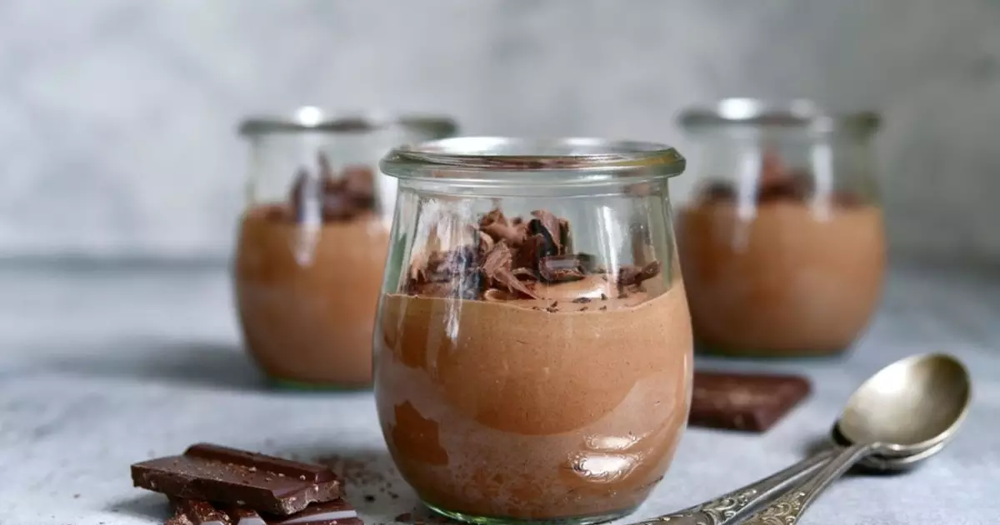
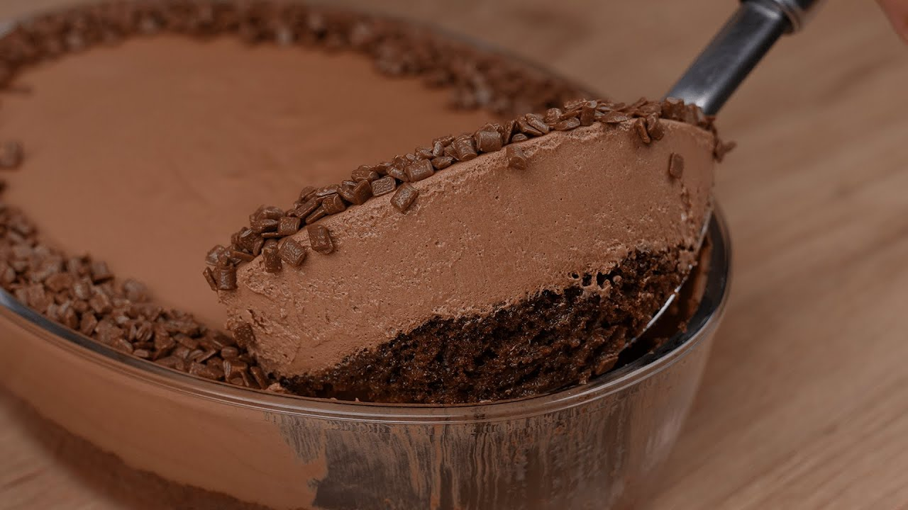

Irei ensinar uma receita de mousse de chocolate gelado, gostoso e fácil de fazer
Os ingredientes são:
1 lata de leite condensado;
2 latas de creme de creme de leite;
3 colheres de nescau;
1 pacote de mini suspiros;

Modo de preparo
Passo 1: Coloque no liquidificador o leite condensado, o creme de leite e o nescau.
Passo 2: Bata durante 1 minutomais ou menos.
Passo 3: Depois pegue a metade do pacote de suspiro, quebre e deixe em pedacinhos bem pequenos.
Passo 4: Coloque no fundo de um refratário, coloque os ingredientes batidos do liquidificador por cima dos suspiros quebrados.
Passo 5: Com o restante dos suspiros decore por cima do creme.
Passo 6: Deixe no congelador por 3 horas.
Fica uma delícia parece sorvete.
